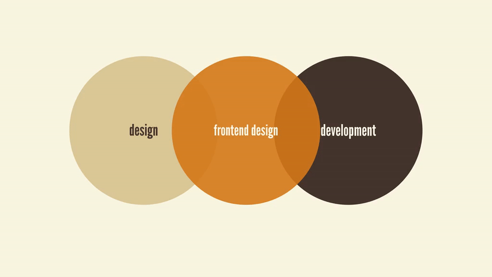

Não tenho uma história bacana, como muitos outros possuem, de ter anos de experiência em áreas de programação e/ou design. Comecei nessa área já velho para os padrões das idades dos novos (ou nem tão novos) desenvolvedores/ designers. Na verdade por muito tempo quis ser jornalista. Isso me fez ler e escrever muito, e de certa forma me ajudou a realmente amar estudar.
Passei por muita coisa antes de abrir pela primeira vez o editor e escrever o <!DOCTYPE html> lá no alto da tela.
Conserto de PCS, curso técnico de eletrônica, Linux, formatação de Windows, shell script, Splinter Cell, mais formatações no Windows…
when you land interviews explain what skills you have, what problems you enjoy solving, and what topics you’re passionate about.Brad Frost
Caí na área de interfaces meio que sem querer. Mas o fato é que eu decidi fazer carreira na área já com 28 anos. Como eu disse, comecei velho. No momento decidi largar o emprego onde estava para melhorar minhas skills e procurar entrar em um lugar onde eu possa participar de projetos desafiadores e que me force a melhorar todo dia.
Eis que então no último mês comecei a me sentir angustiado. Eu precisava me rotular. Logo eu que possuo o perfil de um generalista (embora venha procurando me tornar um especialista). Procurei estudar e tentar entender todas as partes do processo, da pesquisa, ideação, prototipação até o desenvolvimento. Li um pouco sobre marketing, publicidade, empreendedorismo, metodologias… e foi sensacional estudar cada uma dessas disciplinas.
Então como se rotula alguém?
Eu precisava disso para o mercado me conhecer. E acabei optando por uma agenda complexa pra evoluir. Decidi que iria ser o tipo de profissional que tentaria transitar pelo maior número de áreas, conversando de igual para igual com todos os envolvidos no projeto.
Mas e se o mercado me visse como alguém perdido e sem foco? Alguém que ainda não conseguiu se encontrar?
E se eu fosse um… unicórnio?
Ainda sobre o tal rótulo
Entendida a questão, o que colocar? No começo me identificava com o termo Front End. Mas tinha o front end developer, front end engineer, front end architect… fui de desenvolvedor front end mesmo.
A frontend designer (who may also go by UI developer, client-side developer, UI engineer, design engineer, frontend architect, designer/developer, prototyper, unicorn, or Bo Jackson) lives in a sort of purgatory between worlds.Brad Frost
Mas mesmo assim ainda não refletia bem o que estudava. Principalmente naquele momento estava debruçado sobre UX e fundamentos de Design.
Sobre o Front End Designer

Eis que me deparo com esse belíssimo artigo do ótimo Brad Frost, onde ele fala do “Front End Designer” e sobre qual seria seu papel dentro de um time, sendo um profissional que flutua entre o código e o design.
Frontend design involves creating the HTML, CSS, and presentational JavaScript code that makes up a user interface.Brad Frost
Esse texto é daqueles que abrem uma mente. Indico muito a leitura. Segundo Brad Frost, um front end designer:
- Entende de princípios de UX e melhores práticas, mas não gasta seu tempo conduzindo pesquisas, criando fluxos e planejando cenários;
- Têm um olhar afiado sobre estética, mas não gasta seu tempo testando fontes, comparando paletas de cores ou criando ilustrações ou ícones.
- Pode escrever Javascript, mas não gasta seu tempo escrevendo códigos de nível de aplicação ou debugando.
- Entende a importância do desenvolvimento backend, mas não gasta seu tempo escrevendo lógica backend, com servidores ou testando carregamento.
Ainda no artigo, ele explica como há um mal entendido fundamental, sobre generalizar que todo coder é um “programador ultra-geek”.
HTML is not a programming language. CSS is not a programming language. But because HTML and CSS are still technically code, frontend development is often put in the same bucket as Python, Java, PHP, Ruby, C++, and other programming languages. This misunderstanding tends to give many frontend developers, myself included, a severe identity crisis.Brad Frost
O que esses rótulos dizem sobre mim
Nada!
Brincadeira…
Não, é sério…
Fiz uma breve pesquisa (sem fundamento científico), para ver o que as pessoas estavam colocando nos cargos em sites de vagas de emprego. Front end ganhou disparado. Embora aqui em Recife geralmente se encontre vagas para web designers. Passei um bom tempo aqui no blog usando os termos web designer e aquele que pareceu mais coerente para mim, designer de interfaces, embora quase ninguém use esse título. Pelo menos alguém que eu conheça.
Hoje, como vocês podem ver, sou apenas “Front End Designer”. Mas amanhã pode estar outra coisa. Não quero ter escopo limitado por expressões ou rótulos. Não ligo muito pra isso. Pra mim o conhecimento é muito mais importante do que qualquer termo que você decida usar no Linkedin. O ideal é reconhecer as próprias limitações e buscar uma agenda de evolução contínua.
Mas as pessoas necessitam de rótulos para se adequarem e se posicionarem.
Algo que lhes conceda um lugar de destaque entre seus pares.
Algo que não as façam se sentirem como um… unicórnio.